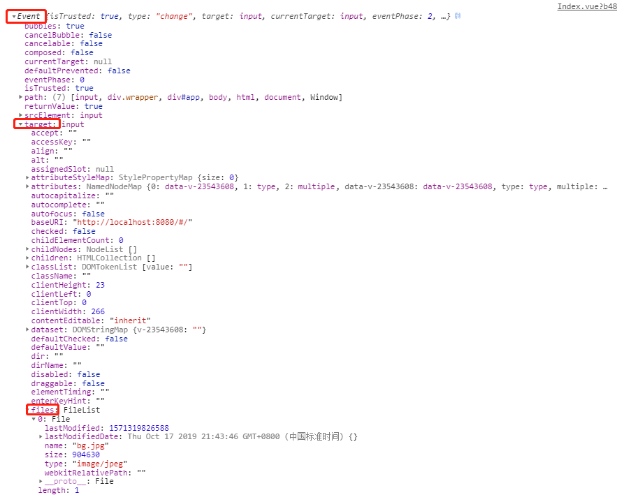
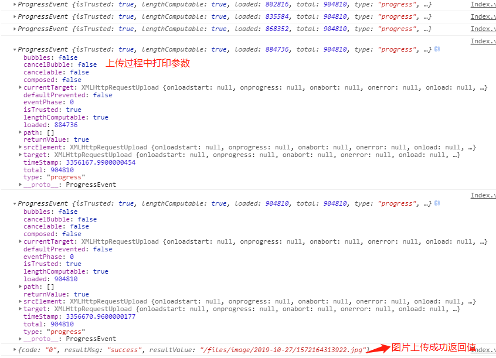
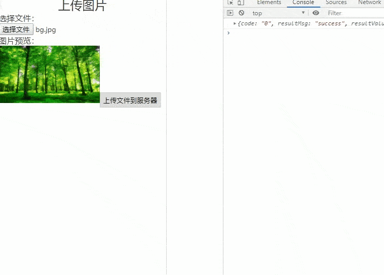

在平时项目开发中，我们经常会对文件做一些上传操作，不仅仅要实现基本需求，也要兼顾用户体验，根据自己在工作中遇到的问题谈谈对图片上传的预览以及上传进度的优化。
基于Vue.js+axios搭建的项目，新建一个Index.Vue项目如下，基本结构可以先可以选择文件，预览文件。
<template>
<div class="wrapper">
<h2 class="text-center">上传图片</h2>
选择文件：<input type="file" multiple="true" accept="image/gif, image/jpeg" @change="handleFileChange($event)">
<p>图片预览：</p>
<img v-show="imgPreViewSrc" :src="imgPreViewSrc" alt="图片预览">
<button v-show="file" @click="uploadFile">上传文件到服务器</button>
</div>
</template>
<script>
...
data(){
return{
imgPreViewSrc:'', //文件预览地址
file:null, //上传文件
}
}
methods:{
}
...
</script>
<style lang="less" scoped>
.text-center{
text-align: center;
}
.wrapper{
font-size: 16px;
width: 60%;
height: 100%;
margin: 0 20%;
border: 1px solid #ddd;
img{
width: 200px;
}
button{
width:120px;
height: 30px;
margin-top: 30px;
line-height: 30px;
border: 1px solid #CCC;
text-align: center;
}
}
</style>
input的类型type设置为file,可以选择文件，multipe属性设置为true，一次可以选择多个文件。
运行项目，页面如下：
选择一个图片文件（bg.jpg）,之前有在input绑定文件改变监听方法，打印事件参数如下：

发现刚才选择的文件在Event>target>files下面
files是一个数组，刚才只选择了一张图片，所以长度为1，图片的名称（name），大小（size），类型（type）都有包含。
2.1.设置文件类型
在input标签accept属性设置文件类型，当用户打开文件资源管理器选择文件时，会过滤掉其他类型文件，能够从源头避免用户选择脏文件，也更加方便用户选择文件。
<input type="file" multiple="true" accept="image/gif, image/jpeg" @change="handleFileChange($event)">
2.2.图片预览
要将用户选择的文件显示到页面上，以方便用户下一步操作，因为用户可能会从选择的文件中再挑选几张图片操作，例如上传到服务器。
图片预览要用到URL对象的URL.createObjectURL(file)方法生成一个blob地址，直接赋值给img标签的src，页面就可以展示。(URL.createObjectURL() 静态方法会创建一个 DOMString，其中包含一个表示参数中给出的对象的URL。这个 URL 的生命周期和创建它的窗口中的 document 绑定。这个新的URL 对象表示指定的 File 对象或 Blob 对象。)
在methods添加handleFileChange方法，预览图片
...
// 文件改变监听事件
handleFileChange(evt){
console.log(evt);
let file=evt.target.files[0];
this.file=file;
let src=URL.createObjectURL(file);
this.imgPreViewSrc=src;
},
...
选择好文件之后，文件要上传到服务器，有时候文件很大或者网速很慢的情况下，用户需要知道已经上传进度，如果没有上传进度，用户退出页面那么文件就上传失败了。
3.1.修改script文件
<script>
import axios from 'axios';
// 文件上传服务api
const baseURL='http://127.0.0.1/api';
function upload (params,cb=null) {
return new Promise((resolve, reject) => {
axios.create({
baseURL,
})({
url:'/upload/uploadFile/image',
method:'post',
data:params,
// 上传进度
onUploadProgress:function(progressEvent){
if(progressEvent.lengthComputable && cb){
cb(progressEvent);
}
},
}).then(res => {
console.log(res.data);
if(res.status===200){
resolve(res.data);
}else{
reject(res.data);
}
}).catch(err => {
reject(err);
});
});
}
...
// 上传文件到服务器
uploadFile(){
let file=this.file;
if(file){
let formData = new FormData();
formData.append('file', file);
upload(formData,(progressEvent)=>{
console.log(progressEvent);
});
}else{
alert('请选择文件')
}
...
</script>3.2.上传进度
在axios入参新增onUploadProgress方法，在文件上传过程中该方法会调用，参数包含上传的一些信息。
有关ProgressEvent的一些介绍:
点击上传按钮，打开控制台：

可以发现ProgressEvent中loaded属性值为图片文件上传的大小，total为文件的大小。
3.3.在页面添加进度条
为了组件通用化，新建一个Progress.vue组件,接受一个progressValue进度参数。
<template>
<div class="progress-box">
<div class="progress-content">
<p v-if="progressValue<100">上传进度：{{progressValue}}%</p>
<p v-else>上传成功!</p>
<progress :value="progressValue" max="100"></progress>
</div>
</div>
</template>
<script>
export default {
props:['progressValue'],
name: 'Progress',
};
</script>
<style lang="less" scoped>
.progress-box{
position: fixed;
top:0;
left:0;
bottom: 0;
right:0;
background: rgba(0,0,0,0.5);
.progress-content{
position: absolute;
top:50%;
left:50%;
width: 300px;
height: 76px;
padding: 8px 30px;
transform: translate(-150px,-38px);
background: #fff;
border-radius: 8px;
p{
margin-bottom: 5px;
}
progress{
width: 100%;
height: 22px;
}
progress::-webkit-progress-bar{
background-color:#d7d7d7;
}
progress::-webkit-progress-value{
background-color:orange;
}
}
}
</style>
在div末尾添加Progress组件，再修改Index.vue文件methods的上传方法：
<template>
<div class="wrapper">
...
<Progress :progressValue="progressValue" v-if="isShowProgressBox"></Progress>
</div>
</template>
<script>
import Progress from '../components/Progress';
...
// 上传文件到服务器
uploadFile(){
let file=this.file;
if(file){
let formData = new FormData();
formData.append('file', file);
upload(formData,(progressEvent)=>{
this.isShowProgressBox=true;
this.progressValue=parseFloat((progressEvent.loaded/progressEvent.total*100).toFixed(2));
if(this.progressValue===100){
let timer=setTimeout(()=>{
this.isShowProgressBox=false;
clearTimeout(timer);
timer=null;
},500);
}
});
}else{
alert('请选择文件');
}
...
</script>
然后再上传图片，如下：

可以看到，点击上传后，页面出现进度模态框，让用户知道已经上传百分比，优化用户体验。